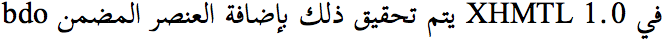
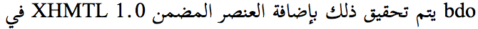
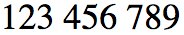
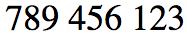
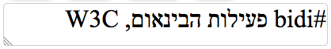

Why and what information is needed about the base direction for a string
For a simple introduction to how the Unicode bidirectional algorithm works, and where it needs additional help, see Unicode Bidirectional Algorithm basics. You will need a grasp of these basics to understand what follows. If you feel more adventurous, read the Unicode Bidirectional Algorithm (UBA).
In order to support correct display of text in right-to-left scripts, when they are eventually displayed to a human, it is necessary to be able to:
- establish the overall base direction for a paragraph
- change the base direction used for a range of text within the string where needed.
These notes are only about the former, ie. establishing the paragraph direction to be associated with a string. We will refer to this as the paragraph direction, however it may not just apply to strings that will be treated as paragraphs when eventually displayed to a human. The string may be injected into an existing paragraph, such as when a telephone number is added to the end of the line which starts with the equivalent of 'Tel:' in, say, Arabic or Hebrew or Thaana.
The Unicode Bidirectional Algorithm specifies that the paragraph direction can be established by seeking out the first strong directional character in the paragraph. While doing so, an application must ignore non-strong characters at the start of the paragraph, as well as any characters inside an isolated range. If the first strong directional character has a Unicode value that equates to RTL, then the paragraph direction is RTL. If there are no strong characters identified, the default is LTR.
The importance of establishing the paragraph direction can be illustrated with a couple of examples which show how it affects the order in which elements in the string will be rendered to a user. Without this information, users may be unable to understand a message. For example, the following shows a string presented with a RTL base direction.

Here is the same string presented with a LTR base direction.

Here is another example, this time a sequence of numbers, such as you may find in a telephone number, presented in a LTR context.

And now, exactly the same sequence, just the surrounding base context has changed to RTL.

For passing around strings this is not an issue, since characters are stored in logical order. It is only an issue when the text needs to be eventually displayed to a human. The display algorithm needs to know the paragraph direction before it starts to display the string.
This document is mostly about cases where the first strong directional character does not indicate the paragraph direction that the originator of the string intended.
Sometimes finding the first strong character is actually misleading. Take a string typed into an HTML form input field such as the following. The image below represents what the user sees as they type, and what they expect others to see later. Imagine this as something like a tweet beginning with a hash tag.

The form field shown above is in a document where the direction of the input field has been set to RTL.
The sequence of characters stored in memory follows the logical order in which the characters were typed and indeed the order in which they would be pronounced, and is shown just below, progressing from left to right. The point to note is that the sequence starts with LTR characters.
#bidi פעילות הבינאום, W3C
If the consumer of this string were to assume that the text needs a LTR base direction, based on detecting the first strong directional character, the result would be incorrect when displayed to another human later.

Typically, the information that indicates that this phrase should be displayed using a RTL paragraph direction is not contained in the string when the form is submitted. It may be contained in the computed direction of the form, which may be set directly on the form itself, via markup or via context menu selections or keystrokes, or it may be inherited from a parent element. (It can be passed to the receiver using the dirname attribute, but that is carried as separate information.)
In cases where the first strong directional character would give the wrong result, the question is how to associate the intended direction with the string for future use.
It is possible that the computed direction of the input element is set to auto. In this case, the browser would look for the first strong character on each line to determine the paragraph direction, and the user would be obliged to provide Unicode control characters at the start of the line shown above to produce the right effect. On the face of it, this doesn't seem such a bad thing – it gets the information we need into the string – but there are practical problems, not least because the user's keyboard is likely to not have the needed control characters. On the desktop browser, users would be more likely to use the context menu or keystrokes to set the direction for the field.
As mentioned above, these notes are only about establishing the paragraph direction.
If a user produces changes in the direction of inline ranges within the paragraph they will need to apply Unicode controls or markup to do so, and those items will remain as part of the string. However, the base direction of the initial (or only) paragraph, however, may not be included in the string